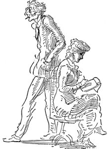

Philadelphia'lı on üçüncü turu bitirmiş, on dördüncü turu tamamlamasına iki mil kalmıştı. Hızının, saatte yüz on mil olduğu sanılıyordu. Arabası, ansızın karşısına çıkan ışık parıltısı yüzünden yalpaladı ve sonra hızla sola saptı. Bir tümseğe çarptı, zıpladı. Araba aydınlatıldığında tümsekte, dört tekerleği üzerinde duruyordu. Açıkça görüldüğü gibi durmasına olanak vermeyen hızla gitmekteydi. Wishart arabayı tümsekten indirdi ve yitirdiği zamanı kapatmaya çalıştı. Hızı, gerekli en küçük dönemeci bile almasına izin vermeyecekti, böylece de araba yolunun üzerindeki bir çiftlik evinin ön bahçesine daldı. Birinci ağacı atlattı, ama ikincisine çarparak yan yattı. Direksiyonun altında ezilmiş olan bacakları, bedeni arabadan çıkarılırken koptu.
Gitmek istiyorum
Meksika'ya
Bayrağımızın altında düşmanla savaşmaya
kameranın düğmesine bastı, öldü
parlak küçük iskemleler ve masa kaldırımda bırakılmış bir biçimde duruyor çünkü kendini iki yudum bile içki içebilecek kadar varlıklı bulan çok az kişi kaldı
muslukçunun yüz tane sevgilisi var
maymunları geri getirdi
kayıp rektör bulundu Birleşik Amerika tarım ürünü üretiminde düşme sağlıklı olmasını istiyorsanız bırakın bebeğiniz çıplak dolaşsın eğer bu giz perdesi aralanırsa bu gizin altında bir kadın bulacaksınız dedi devriye polisi E. B. Garfinkle şimdiki savaşa neden olan olgular sürekli geriye, Fransız Devrimi günlerine götürüyor bizi
üniversitede çiklet çiğnemek yasaklandı
ansızın gözünün ortasına yumruk yemiş sarhoşlar gibi yalpalıyorlardı sonra da anlayamadığımız yabansı bir çığlıkla bir şeyler bağırarak bize doğru koşmaya başladılar
Haremdeki kadınlar
Nasıl giyeceklerini bilirlerdi bunları
Uzun yıllar önce Doğu'nun Bağdat'ında
Sine-göz (23)
çok hoş sarı saçlarıyla annemin bu arkadaşı güzel kadındı iki güzel kızı vardı sarışın olanı avuç içi gibi dazlak kafalı bir petrolcüyle evlendi Sumatra'ya gitti esmeri Bogota'lı bir adamla evlendi Magdalena Nehri'nde içi oyulmuş kütükten kayıkla uzun bir yolculuktu bu oranın yerli halkı Kızılderili'ydi hamaklarda uyudular korkunç hastalıklara yakalandılar kadın çocuk doğurduğunda yatağa düşen zehirli oklar yiyen kocası oldu o ülkede bir de yaralandın mı hiç iyileşmezdi yaran bembeyaz irin toplar dururdu oyulmuş kütükten kayık da öyle kolayca devrilirdi ki suyun içine sıcak buharlaşan yırtıcı balıklarla dolu suyun içine bir yerinizde sıyrık varsa iyileşmemiş yara varsa kan kokusu çekerdi bu balıkları kimi zaman insanları paramparça ederlerdi
oyulmuş kütükten kayıkla sekiz hafta gidilirdi Magdalena Nehri'nde sonra varılırdı Bogota'ya
zavallı Jonas Fenimore Bogota'dan döndüğünde çok hastaydı fil hastalığına tutulmuş olduğunu söylediler çok iyi insandı sisli ormanlar fırtınalar timsahlar korkunç hastalıklar yırtıcı balıklar üzerine öyküler anlatırdı dolaptaki tüm viskiyi içerdi yüzmeye gittiğinde bacaklarında kalın pul pul elma kabuğu gibi lekeler görünürdü viski içmeyi çok severdi Kolombiya'nın yeryüzündeki en varlıklı ülkelerden biri olacağından petrolden kaplamacılıkta kullanılan değerli ağaçlarından tropikal kelebeklerden söz ederdi
ama Magdalena Nehri boyunca yolculuk çok uzundu hava çok sıcaktı çok tehlikeliydi Jonas öldü
dediklerine göre nedeni de viskiydi fil hastalığıydı
ve Magdalena Nehri'ydi
Eleanor Stoddard
New York'a ilk geldikleri sıralar, daha önce Doğu'da hiç bulunmamış olan Eleanor her konuda Eveline'e bağımlı kalmak zorundaydı. Freddy onları istasyonda karşıladı, oda tutmaları için Brevoort'a götürdü. Tiyatroya biraz uzak olduğunu, ama tüm sanatçılar, radikaller, gerçekten ilginç kişiler orada kaldığı ve Fransa'yı çok andırdığı için kent merkezinin uzağındaki bir otelden çok daha ilginç bulacaklarını söyledi. Arabada giderlerken Freddy sürekli konuştu, o çok hoş, büyüleyici oyunu ve kendi büyük katkısını, yönetmen Freelby'nin nasıl da salak olduğunu, kendilerini destekleyenlerden birinin nasıl da söz verdiği paranın yarısını ödediğini anlattı; ama işleri yöneten Josephine Gilchrist şimdi önceden kararlaştırılan parayı toparlamıştı, Shubert'ler onlarla ilgileniyorlardı, tam bir ay sonra, kent dışında, Greenwich'te oyuna başlayacaklardı. Eleanor dışarı, Beşinci Cadde'ye, kadınların eteklerini havaya uçuran ürpertici bahar rüzgârına, şapkasının peşinden koşan bir adama, yeşil otobüslere, taksilere, vitrinlerin parıltısına bakıyordu. Ne yani, burası Chicago'dan çok da, değişik değildi. Ama Brevoort'taki yemek çok farklıydı, Freddy bir sürü insan tanıyordu, onları hepsiyle tanıştırdı, kızlarla gururlanıyor gibiydi. Hepsi de adlarını duyduğu ya da Daily News'un kitap sayfalarında okuduğu kişilerdi. Dostça davrandılar onlara. Freddy garsonla Fransızca konuştu, Hollanda salçası o güne kadar yediklerinin en güzeliydi.
Öğleden sonra provalara giderken Eleanor arabanın camından ilk kez Times Alanı'nı gördü. Karanlık tiyatroda oyuncular oturmuş Mr. Freelby'yi bekliyordu. Sahnenin üzerinde asılı, bir tek büyük elektrik ampulü ve başka bir oyun için hazırlanmış yassı, tozlu dekorlarla içerisi çok gizemliydi.
Kır saçlı, hüzünlü geniş bir yüzü olan, gözlerinin altı geniş halkalarla çevrili bir adam içeri girdi. Ünlü Benjamin Freelby buydu işte. Yorgun, babacan tavırları vardı, rahatça dekorlardan, giysilerden konuşabilmeleri için o gece Eleanor'la Eveline'e, Freddy'yle birlikte evine yemeğe gelmelerini söyledi. Onun bu denli ince, yorgun biri olması Eleanor'u rahatlatmıştı. Ne yani, Eveline de, kendisi de, şu New York'lu oyuncuların hepsinden daha iyi giyimliydiler. Mr. Freelby ışıklar yanmadığı için ortalığı ayağa kaldırdı, karanlıkta mı prova yaptırmasını bekliyorlardı? Sahne amiri elinde oyun metni, ortalıkta koşuşup elektrikçi aradı, biri de büroya telefon etmek üzere gönderildi. Mr. Freelby sahneyi arşınladı, sinirlendi, öfkelendi, “Hayvanlık bu,” dedi. Elektrikçi elinin tersiyle ağzını silerek geldiğinde, sonunda salon ışıklarını, sahne ışıklarını yaktığında bu kez de Mr. Freelby için masa, iskemle, masanın üzerinde okuma ışığı bulmaları gerekti. Hiç kimse onun boyuna uygun iskemle bulmayı beceremedi. Öfkeyle dolaşmayı sürdürdü, kabarık, kır saçlarını çekiştirdi, “Hayvanlık bu,” deyip durdu. Sonunda yerleşti, yanındaki iskemlede oturan, sırık gibi sahne amiri Mr. Stein'e, “Birinci perdeyle başlayacağız, Mr. Stein. Herkes kendi bölümünü aldı mı?” dedi. Birkaç oyuncu sahneye çıktı, sağda solda durdu, ötekiler alçak sesle konuşuyorlardı. Mr. Freelby onlara, “Şişşt” dedi. “Lütfen çocuklar, sessiz olmalıyız.” Prova başlamıştı.
O günden sonra sürekli koşuşturma içine girdiler. Eleanor yatağına yatma olanağı bulamıyordu bir türlü sanki. Dekorların, stüdyosunda boyandığı sahne ressamı Mr. Bridgeman her şeye karşı çıkıyordu. Bir başkasının, Mr. Bridgeman'ın yanında çalışan solgun yüzlü, gözlüklü çocuğun, onların taslaklarını kullanarak dekorları hazırlayacağı, dekoratörler sendikasına üye olmadıkları için giysileri hazırlama dışında programın hiçbir yerinde adlarının geçmeyeceği anlaşıldı. Mr. Bridgeman'ın stüdyosunda kavga etmedikleri zamanlar, ellerinde kumaş örnekleriyle, arabaların içinde, sokaklarda dört dönüyorlardı. Sabaha karşı dörtten beşten önce yatağa girdikleri yoktu. Herkes çok sinirliydi, Mrs. Gilchrist'ten çek koparabilmek için Eleanor'un her hafta boğuşması gerekiyordu.
Victoria çağının ilk yıllarının modasına uygun giysiler hazır olunca, Eleanor, Freddy, Mr. Freelby bunları görmeye gittiler ve gerçekten çok güzel buldular, ama, mağaza sahibi çek almadan vermiyordu, kimse Mrs. Gilchrist'i bulamadı, herkes taksilerin içinde ortalıkta dolaştı durdu, sonunda gecenin geç saatlerinde Mr. Freelby kendi hesabından çek vereceğini söyledi, içinde dekorlarla taşımacılık şirketinin kamyonu kapıya dayanmıştı, ama onlar da çeklerini almadan içindekilerin dışarı çıkarılmasına izin vermiyorlardı. Mr. Bridgeman gelmiş, kendisine verilen çekin arkasında karşılığı yok yazısıyla geri çevrildiğini söylüyordu. Mr. Freelby onu gişeye sokup konuştu. Sonunda Josephine Gilchirst, elinde Mr. Bridgeman'a ve taşımacılık şirketine verilmek üzere beş yüz dolarlık kâğıt paralar bir taksiyle ortaya çıktı. Arkaları turuncu, gevrek kâğıt paraları görünce herkesin yüzüne gülümseme yayıldı. Büyük bir rahatlama oldu.
Dekorların tiyatroya gireceğinden emin olduktan sonra, Eleanor, Eveline, Freddy, Josephine, Mr. Freelby, bir şeyler yemek için Bustanoby'ye gittiler. Mr. Freelby onlara iki şişe Pol Roger ısmarladı, Josephine, oyunun büyük başarı kazanacağını taa içinden duyduğunu, böyle bir şeyin her zaman içine doğmadığını söyledi, Freddy sahne işçilerinin oyunu sevdiklerini, bunun de hep iyi bir belirti olduğunu anlattı. Mr. Freelby, Shubert'lerin ayak işlerine bakan çocuğun oyunun provasını baştan sona gözlerinden yaşlar akarak izlediğini söyledi, ama kimse bir hafta Greenwich, bir hafta da Hartford'da oynadıktan sonra oyunun hangi tiyatroda sahneleceğini bilmiyordu. Mr. Freelby, sabah ilk iş olarak gidip J. J.'yle bu konuyu konuşacağını bildirdi.
Giysilerle yapılacak provayı görmek için Chicago'daki arkadaşları aradı. Özelikle de Sally Emerson telefonla gelmek istediğini söyleyince Eleanor kendini çok önemli biriymiş gibi hissetti. Giysilerle prova korkunç geçti. Dekorların yarısı gelmemişti. Wessex köylülerinin de giysileri yoktu, ama herkes giysili provanın kötü geçmesinin sonrası için iyi belirti olduğunu söyledi.
Oyunun başlayacağı gece Eleanor ağzına bir lokma koyamadı, giyinmek için yalnızca yarım saati vardı. Heyecandan her yanı buz kesmişti. Tappe'den almış olduğu yeni, açık yeşil tül gece elbisesinin kendisine yakışacağını umuyordu, ama bununla uğraşacak zamanı yoktu. Bir bardak koyu kahve içti, bindiği taksi bir türlü kentten çıkamayacak gibiydi. Tiyatroya girdiğinde bekleme salonu ışık içindeydi, ipekli şapkalarla, çıplak pudralı sırtlarla, pırlantalarla, şallarla doluydu, ilk gecelerin alışılmış kişileri birbirlerine bakıyorlar, arkadaşlarına el sallıyorlar, kimin geldiğinden, kimin gelmediğinden söz ediyorlar, birinci perdenin ortasına kadar sürü sepet içeriye doluşmayı sürdürüyorlardı. Eleanor'la Eveline, arkalarda, kaskatı yan yana durdular, bir giysi gözlerine güzel göründüğünde birbirlerini dürttüler, oyuncuların çok kötü, en kötülerinin de Freddy Seargeant olduğunda birleştiler. Daha sonra Sally Emerson'un dostları Carey'lerin iki katlı apartman katında onlar için düzenlediği eğlencede, herkes giysilerle dekorların çok güzel olduğunu, oyunun büyük başarı kazanacağını söyledi. Eleanor'la Eveline tüm ilginin merkeziydiler. Eveline içkiyi biraz fazla kaçırıp gürültü çıkardığı için Eleanor tedirgin oldu. Birçok ilginç kişiyle tanıştı, ne olursa olsun New York'ta kalmayı aklına koydu.
Oyun iki hafta sonra balon gibi söndü. Eleanor'la Eveline, yönetimin kendilerine borçlu olduğu yedi yüz elli doları hiçbir zaman alamadı. Eveline Chicago'ya döndü, Eleanor Sekizinci Cadde'de apartman katı tuttu. Sally Emerson, Eleanor'un büyük yetenek olduğuna karar verip New York'ta dekorasyon işi kurması için kocasının ona bin dolar vermesini sağladı; Eveline Hutchins'in babası hastaydı, ama Chicago'dan yazarak fırsat bulur bulmaz hemen geleceğini söyledi.
O yaz Sally Emerson New York'ta olduğu sıralar Eleanor hep onunla çıkıp bir sürü varlıklı kişiyle tanıştı. Alexander Parsons aracılığıyla J. Ward Moorehouse'un Great Neck yakınlarında yaptırdığı yeni evinin dekorasyonunu aldı. Mrs. Moorehouse bitmemiş evi onunla birlikte dolaştı. Çok yıpranmış bir sarışındı, peş peşe ameliyatlardan böylesine güçsüz düşmemiş olsa evini kendisinin döşeyeceğini açıklıyordu, ikinci çocuğunun doğumundan beri yataktan çıkamamıştı, Eleanor'a geçirdiği ameliyatı anlattı. Eleanor kadınların yakınmalarını dinlemekten nefret ediyordu, arada soğuk soğuk başını sallayarak mobilyalar, döşemelik kumaşlar üzerine iş havasında yorumlar yaptı, döşeme konusunda bir kâğıda küçük notlar aldı. Mrs. Moorehouse evleri bitene kadar kalmakta oldukları küçük sayfiye evinde kendileriyle yemek yemesini istedi. Küçük ev, Hollanda sömürge tarzında, içi minik süs köpekleri, önlükleri fırfırlı hizmetçiler, bir de uşak dolu koca bir evdi. Yemek odasına geçerlerken Eleanor bitişik odadan bir erkek sesiyle puro dumanının kokusunu duydu. Yemekte Mr. Moorehouse'la ve Mr. Perry'yle tanıştırıldı. Golf oynamışlardı, Tampico'dan ve petrol kuyularından söz ediyorlardı. Mr. Moorehouse yemekten sonra onu arabasıyla kente bırakmayı önerdi. Mrs. Moorehouse'tan kurtulmak düşüncesi Eleanor'u rahatlattı. Yeni evin döşenmesi konusunda aklından geçirdiklerini anlatma olanağını bulamamıştı, ama yolda Mr. Moorehouse birçok soru sordu, çoğu kişinin evinin ne denli çirkin olduğuna birlikte güldüler. Eleanor böyle şeylere önem veren bir işadamı bulmanın çok ilginç olduğunu düşündü. Mr. Moorehouse tasarılarını hazırlayıp işyerine getirmesini istedi. “Perşembe günü nasıl?” Perşembe çok iyiydi, o gün kimseyle buluşmayacaktı, Eleanor isterse birlikte yemek de yiyebilirlerdi. “Yemek zamanı, işimin dışındaki incelikli konulara adayabildiğim tek zamanımdır,” dedi gözlerinde mavi parıltıyla. Bir ağızdan yine “Perşembe,” dediler, onu Beşinci Cadde'yle Sekizinci Cadde'nin köşesinde bıraktığında, Eleanor adamın mizah duygusu taşıyan biri olduğunu, ondan Tom Curtis'ten hoşlandığından çok daha fazla hoşlandığını düşünüyordu.
İş ilerledikçe Mr. Moorehouse'a sık sık görüşmek zorunda olduğunu anladı. Onu, Sekizinci Cadde'deki evine akşam yemeğine çağırdı, Martinique'li hizmetçisi Augustine'e domatesli, kırmızıbiberli, kızarmış tavuk hazırlatmıştı. İçinde pelinotu bulunan kokteyller, bir şişe çok güzel Bourgogne şarabı içtiler, Ward Moorehouse sedirde oturup konuşmaktan, kız onu dinlemekten çok hoşlandı, ona J. W. demeye başladı. Artık Great Neck'teki evin içi dışında da arkadaştılar.
Ward, Eleanor'a Delaware Eyaleti'nin Wilmington kentindeki çocukluk günlerini, jandarmaların yaşlı zenciye ateş açtıkları, gemileri İspanyol donanması sandığı günü, mutsuz ilk evliliğini, ikinci eşinin nasıl bir sakat olduğunu, gazetecilik, reklamcılık işlerini anlattı, yalnızca bir omzu belli belirsiz parıltılı, dümdüz gri elbise giymiş olan Eleanor, sezdirmeden ev hanımı rolünü oynadı ve adama yapmakta olduğu işi açıklama olanağı verdi. Ward, sermayeyle işçiler arasındaki ilişkilerin durumu konusunda halka bilgi veriyor, duygusal adamların, reformistlerin propagandasına engel oluyor, Alman sosyalistlerin çılgınca düşünceleri karşısında Amerikan düşüncelerini yüceltiyor, Kuzeybatı'daki tedirgin çiftçilerin sorunlarına çözüm getiriyordu. Eleanor onun düşüncelerini çok ilginç buluyor, ama borsadan, Çelik Şirketi'nin nasıl kurulduğundan, Meksika'daki petrol şirketlerinin sorunlarından, Hearst'lerden, büyük servetlerden söz etmesini yeğliyordu. Yapmakta olduğu küçük bir yatırım konusunda düşüncelerini sordu, Ward, varlıklılığın artık çenesinin köşelerini yuvarlatmaya başladığı beyaz, kare biçimi yüzündeki parlak mavi gözleriyle ona bakıp, “Mrs. Stoddard, mali danışmanınız olma onurunu bana verir misiniz?” dedi.
Eleanor, onun belli belirsiz Güneyli şivesinin, eski terbiye almış olmaktan gelen incelikli tavırlarının çok çekici olduğunu düşünüyordu. Keşke daha iyi görünümlü bir evi olsaydı, şu kristal şamdanları satmak yerine birkaçını kendine ayırsaydı. Ward giderken saat on iki olmuştu, çok iyi bir gece geçirdiğini, ama gidip şehirlerarası telefon konuşmaları yapması gerektiğini söyledi. Eleanor iki şamdanın saçtığı ışıkta, makyaj masasına oturup aynanın önünde yüzünü kremle ovmaya başladı. Keşke boynu böylesine kemikli olmasaydı, arada bir saçını yıkatırken kınalı suyla çalkalatsa acaba nasıl olurdu?
Sine-göz (24)
yağmur yağıyor tarihi Quebec'e yağmur yağıyordu tarihi Quebec'teki Şato'ya orada yiğit Wolfe taşbasması resminde üç köşeli şapkasıyla kayığa oturmuş adamlarına Gray'ın “Mersiye”sini okuyordu Yiğit Wolfe üç köşeli şapkası incecik kravatı ve üniforması dantelli fiyonklarla süslü Abraham Ovaları'ndaki tepelere tırmanıyordu yiğit Montcalm'la buluşmak için ve ateş diye buyurdu bir ses dantelli fiyonklar rezil oldu Abraham Ovası'nın çamurunda
ama Şato dünyaca ünlü bir otel olan tarihi Frontenac Şatosu'ydu gri yağmur altında tarihi gri Quebec'te biz Saguenay Irmağı'nın kaynağına doğru çıkıyorduk Dünyanın En Güzel Görünümünü İzlemeyi Sağlayan Buharlı Gemisiyle Chautauqua'lı Konuşmacı ve karısı ve Kentucky'nin Atina kentinden bir bariton da bizimle birlikte orada Akropolis diye bir tepeleri varmış Yunanistan'da Atina'dakinin aynı ve kültürde aynı bir de Yunanistan'da Atina'daki Parthenon Tapınağı'nın tıpatıp eşi
dışarda sahanlıkta taşlı sokaklarda taş gibi dolu yağıyor şemsiyelerini açmış St. Lawrence halkı bir aşağı bir yukarı dolaşıyor geniş tahta sahanlıkta Quebec'in kurşuni sivri çatılarına bakan kömür rıhtımlarına tahıl trenlerine vapurlarına Öte Yaka'dan buhar fışkırtarak gelen İrlanda İmparatoriçesi'nin krem rengi bacalarına Levis'e ırmağın karşısındaki yeşil tepelere yeşillere karşı yemyeşil Orleans Adası'na Quebec'in pırıl pırıl gri sivri tepeli çatılarına yağan doluya bakan
ama Chautauqua'lı Konuşmacı yemeğini istiyor karısıyla kavga ediyor tarihi Frontenac Şatosu'nun tarihi yemek salonunda olay çıkarıyor başgarson geliyor Chautauqua'lı Konuşmacı iriyarı sık kıvırcık saçlı öfkeli bir adam haykırıp duruyor Akropolis çadırlarında tıpkı Yunanistan'da Atina'dakinin aynı ve Parthenon tıpkı Yunanistan'da Atina'dakinin aynı ve bariton da çok ilgileniyor küçük çocukla buralardan çekip gitmek isteyen keşke geleceğimi söylememiş olsaydım diyen ve hepsini tutup sarsmak isteyen çocukla
ama yağmur yağıyor tarihi Quebec'e baritonla yapayalnız sokakta yürürken böylesine bir kentte nasıl da kötü kızlar bulunduğunu oğlanların kötü kızlarla gezmemeleri gerektiğini Akropolis'i opera sanatını Parthenon'u şarkıcılık eğitimini Yunanlı oğlanların güzelim heykellerini Nike Anıtı'nın güzelim heykellerini anlatıyordu boyuna
ama sonunda onu sarstım trene atlayıp gittim görmeye türkülerde öykülerde, anlatılan ünlü Montmorency Çağlayanları'nın Saint Anne de Beaupre'deki hastaların bıraktıkları koltuk değnekleriyle dolu kiliseyi
ve kızlarla dolu gri yağmurlu sokakları
Janey
Avrupa Savaşı'nın ikinci yılında Mr. Carroll, Carroll ve Dreyfus firmasındaki hisselerini Mr. Dreyfus'a satarak doğup büyüdüğü kent olan Baltimore'a gitti. Demokrat Parti Kurultayı valiliğe aday gösterecekti. Janey onu özlüyor, Maryland'deki politik olayları gazetelerden ilgiyle izliyordu. Mr. Carroll aday olamayınca Janey onun için çok üzüldü, işyerine her geçen gün daha çok sayıda yabancı geliyor, konuşmalar belirgin biçimde Alman yanlısı oluyor, bu da Janey'in hiç hoşuna gitmiyordu. Mr. Dreyfus yanında çalışanlara karşı çok incelikli, cömert davranıyordu, ama Janey sürekli Belçika'nın acımasızca işgalini, yaptıkları canavarlıkları düşünüyor, bir barbar için çalışmaktan hoşlanmıyor, başka iş arıyordu. Washington'da işler durgundu, Mr. Dreyfus'tan ayrılmanın aptallık olduğunu biliyor, ama başka türlüsü de elinden gelmiyordu. Bu yüzden de haftada bir dolar daha az ücretle Connecticut Caddesi'nde emlakçılık yapan Smedley Richards'ın yanına girdi. Mr. Richards iri yapılı, sürekli kibarlığın ilkelerinden söz eden, Janey'le sevişmek isteyen bir adamdı. Birkaç hafta Janey onu kendinden uzak tuttu, ama üçüncü hafta adam iyice sarhoş olup tombul elini, orasına burasına uzattı, bir gün bir dolar ödünç aldı, hafta sonunda ona birkaç gün para veremeyeceğini söyledi, bu yüzden de Janey işe gitmedi ve işsiz kaldı.
İşsiz kalmak korkunç bir şeydi. Gürültücü kız kardeşleriyle, kiracılarla dolu o eve gidip annesiyle oturmaktan çok korkuyordu. Her gün The Star'daki, The Post'taki ilanları okuyor, her işe başvuruyor, ama sabah ilk iş olarak belirtilen adrese gitmesine karşın her defasında biri ondan önce davranmış oluyordu. İş Bulma Kurumu'na bile yazıldı. Masadaki kadın çürük dişli, kötü kötü sırıtan, iriyarı biriydi. Janey'den kayıt parası olarak iki dolar aldıktan sonra ona sırada beklemekte olan uzman daktilo kızlar listesini göstererek kızların evlenmesi gerektiğini, hayatlarını kazanmaya çalışmalarının boşuna bir saçmalık olduğunu, çünkü bunu yapamayacaklarını söyledi. İçerinin ağır havası, sıralarda oturmuş bekleyen kızların çimdiklenerek kızartılmış yanakları midesini bulandırdı, dışarı çıkıp bir süre Lafayette Alanı'nda bir sırada güneşte oturdu. Hâlâ Miss Robinson'un yanında çalışmakta olan Alice'e iş bulamamış olduğunu söyleyecek cesareti toplamaya çalışıyordu bir yandan da. Kırmızı yüzlü bir delikanlı gelip yanına oturarak konuşmaya çalışınca Janey kalkıp yürüdü. Bakkala girip kakaolu süt içti, gazozcu çocuk ona biraz takılmaya kalkıştı, Janey de hıçkıra hıçkıra ağlamaya başladı. Çocuk çok korkmuştu, “Özür dilerim, hanımefendi, sizi incitmek istemedim,” dedi. Riggs Binaları'ndan çıkan Alice'le buluştuğunda gözleri hâlâ kırmızıydı. Janey'in tek lokma bile yiyememiş olmasına karşın Alice, otuz beş sentlik yemeğin parasını ben vereceğim, diye tutturdu. Alice'in ben sana dememiş miydim havası Janey'i çılgına çeviriyordu. Artık Miss Robinson'un yanına dönmeye çalışmak için çok geçti, çünkü orada çalışan kızların bile pek yapacak iş buldukları yoktu. O öğleden sonra iş arayamayacak kadar umutsuzdu Janey, Kızılderililere özgü boncuk işlerinin, savaş kayıklarının, totem direklerinin örnekleriyle ilgilenmeye çalışarak Smithsonian Enstitüsü'nü dolaştı, ama her şey sinirini bozuyordu, odasına çıkıp güzelce ağladı. Joe ve Jerry Burnham aklına geldi, niye kendisine mektup yazmadıklarını merak etti, siperlerdeki zavallı askerleri de düşünüp kendini daha da yalnız hissetti. Alice dönmeden önce yüzünü yıkamış, pudralanmış, çevik adımlarla odada dolaşıyordu, iş dünyasındaki bunalım üzerine Alice'e şakalar yaptı, Washington'da iş bulamazsa Baltimore, Chicago ya da New York'ta çalışmaya gideceğini söyledi. Alice bu tür konuşmaların kendisini çok üzdüğünü belirtti. Çok para harcamamak için çıkıp bir bardak sütle jambonlu sandviç yediler.
Güz boyu Janey iş arayarak dolaştı. Bunu öylesine saplantı haline getirmişti ki sabah uyanır uyanmaz duyduğu ilk şey bir uğraşının olmamasının yarattığı kapkara iç sıkıntısıydı. Yılbaşı yemeğini annesi ve kız kardeşleriyle yedi, kendisine acımalarını önlemek için yeni yılın ilk gününde haftalığı yirmi beş dolarlık bir iş için söz almış olduğunu söyledi. Onlara, kendisine acımanın hoşnutluğunu veremezdi.
Yılbaşında, postadan yırtık bir kâğıt paket aldı, içinde işlemeli bir kimono vardı. Mektup bulmak amacıyla paketi birkaç kez aradı, ama üzerine iyi yıllar yazısı karalanmış küçük bir kâğıt parçasından başka şey bulamadı. Pakette St. Nazaire Fransa damgası, ouvert par la censure[11] yazısı vardı. Bu, savaşı çok yakınına getiriyordu. Umarım Joe oralarda, tehlikede değildir, diye düşündü.
Ocak ayında, buz gibi bir öğle sonrası, Janey yatağına uzanmış Yaşlı Eşlerin Öyküsü'nü okurken ev sahibi Mrs. Baghot'un kendisini çağıran sesini duydu. Daha ödememiş oldukları o ayın kirası yüzünden çağırdığını düşünerek ödü patladı, ama Alice telefon ediyordu. Elini çabuk tutmasını, birkaç günlüğüne steno bilen birini arayan bir adam olduğunu, kızların hiçbirinin orada bulunmadığını, Janey'in gidip adamla görüşebileceğini ve isterse işe girebileceğini söyledi. “Adres nedir? Hemen gidiyorum.” Alice adresi söyledi, hattın öbür ucundaki sesi korkudan titriyordu. Öylesine ürküntü içindeyim ki . . . Miss Robinson işi sana sağladığımı duyarsa öfkeden köpürür.” “Üzülme, ben adama durumu anlatırım,” dedi Janey.
Adam, Pennsylvania Caddesi'ndeki Continental Otel'deydi. Her yana daktiloda yazılmış kâğıtların, kâğıt kapaklı kitapçıkların saçılmış olduğu bir yatak odasıyla bir oturma odası vardı. Çerçevesi yıpranmış gözlüklerini, sanki onlarla mı, yoksa onlarsız mı daha iyi gördüğüne karar veremiyormuş gibi bir takıyor, bir çıkarıyordu. Kız şapkasını asıp, kalemiyle kâğıdını çantasından çıkarır çıkarmaz yazdırmaya başladı. Sürekli uzun ince bacakları üzerinde gidip gelerek, söylev çekiyormuş gibi coşkuyla konuşuyordu. Sermaye, emek, sekiz saatlik çalışma günü, Lokomotif Makinistleri Birliği üzerine “Hemen Yayımlanacak” notu taşıyan bir tür makaleydi. Janey, biraz da kaygılanarak adamın işçi önderi olduğunu düşündü. Yazdırmayı bitirince, bunları hemen daktiloya çekmesini, bir dakika sonra geri döneceğini söyleyerek ansızın odadan çıktı. Masanın üzerinde Remington yazı makinesi duruyordu, ama Janey şeridi değiştirmek zorunda kaldı. Adam geri döner de bitirmemiş olduğunu görür korkusuyla büyük hızla yazıyı yazdı. Sonra, makaleyi, öteki kopyaları masanın üzerine düzgün, tertemiz yığarak oturup beklemeye başladı. Bir saat geçti adam ortalarda yoktu. Janey tedirgin oldu, odada dolaştı durdu, kitapçıklara baktı. Hepsi de emek ve iktisat üzerineydi, Janey'in ilgisini çekmedi. Sonra pencereden baktı, postane kulesindeki saatin kaçı gösterdiğini anlayabilmek için boynunu uzatarak görmeye çalıştı. Ama göremedi, bu yüzden de telefonla sorup Mr. Barrow oteldeyse yazısının hazır olduğunu söylemelerini istedi. Saat beşti, hemen geri döneceğini onlara da söylemiş olmasına karşın Mr. Barrow daha gelmemişti. Ahizeyi yerine koyarken masadan leylak rengi bir kâğıdı yere düşürdü. Yapacak başka şeyi olmadığı, ıvır zıvırla oynamaktan bıktığı için kâğıdı alıp okumaya başladı. Kendinden utanıyordu, ama bir kere okumaya başlamıştı, bırakamazdı.

sevgili g. h.
Bunu yapmak hiç hoşuma gitmiyor, inan bana yavrum, ama hemen birkaç kuruşa müthiş gereksinim duyuyorum, iki bin dolarla (2.000) buraya geleceksin, yoksa yemin ederim sana kibar davranmayı bir yana bırakıp canına okuyacağım. Bunu yapmaktan nefret ediyorum, ama mangırın olduğunu bilmesem seni böyle rahatsız etmezdim, bu sefer gerçekten iş söz konusu.
Bir zamanlar sevdiğin küçük kız
queenıe
Janey kızararak mektubu tam aldığı yere bıraktı. Şu erkekler de ne korkunçtu, her zaman gizli kapaklı bir pislikleri olurdu. Hava kararmıştı, telefon çaldığında Janey acıkmaya, tedirgin olmaya başlıyordu. Mr. Barrow'du arayan, böyle beklettiği için üzgün olduğunu, Shoreham'da Mr. Moorehouse'ın dairesinde bulunduğunu, hemen gelmesini –hayır, hayır, yazıları istemiyordu– yazdıracağı başka şeyler de olduğunu söyledi. J. Ward Moorehouse'ın yanında bekliyordu, bu adı duymuş olması gerekliydi. Janey adı duymamıştı, ama yazı yazmak için Shoreham'e gitme düşüncesi, şu mektup, her şey ona coşku veriyordu. Jerry Burnham'la dolaştığı günlerdekine benzer bir coşku. Mantosunu, şapkasını giydi, şöminenin üzerindeki aynada yüzünü biraz boyadı, buz gibi soğuk ocak akşamında F ve On Dördüncü caddelerin köşesine yürüdü, orada durup araba beklemeye başladı. Keşke kürklü eldivenlerim olsaydı, diye düşündü, incecik eldivenlerinden geçen kırbaç gibi rüzgâr ellerini donduruyordu, ayakkabılarının bittiği yerden de içeri doluyordu. Keşke Chevy Chess'de oturan, varlıklı evli bir kadın olsaydı. Lüks arabasının gelip kendisini almasını, evine, kocasına, çocuklarına, gürül gürül yanan ateşe götürmesini bekleseydi. Jerry Burnham'ı anımsadı, acaba onu iyi yönlendirebilseydi kendisiyle evlenmesini sağlayabilir miydi? Ya da Johnny Edwards'ı. Evlenmeye yanaşmayınca New York'a gitmişti, şimdi de bir simsarın yanında çok iyi para kazanıyordu. Ya da Morris Byer'i. Ama o Yahudi'ydi. Bu yıl hiç erkek arkadaşı olmamıştı. Artık yavaş yavaş aranmaz oluyordu, işin gerçeği buydu.
Shoreham'ın önündeki köşede arabadan indi. Otelin girişi sıcacıktı. İyi giyimli kişiler sağda solda durmuş, iyi giyimlilere özgü seslerle konuşuyorlardı. Ortalık limonluk çiçekleri kokuyordu. Danışmadan, birinci kat, sekiz numaraya gitmesini söylediler. Buruşuk beyaz yüzlü, ipek gibi siyah saçlı bir adam kapıyı açtı. İpek gibi siyah elbise giymişti, gizemli biçimde kayarak yürüyordu. Mr. Barrow'un sekreteri olduğunu söyleyince adam onu yandaki odaya soktu. Kapıda durup birinin kendisini görmesini beklemeye başladı. Odanın ucundaki büyük ocakta iki kütük harıl harıl yanıyordu, önündeki geniş masa, dergi, gazete, daktiloda yazılmış kâğıt yığınlarıyla doluydu. Bir ucunda gümüş çay takımı, öteki ucunda sürahiler, içki karıştırıcıları, bardaklarla kaplı tepsi duruyordu. Her şeyde pırıl pırıl cilalanmış, gümüşsü bir parıltı vardı, iskemlelerde, masalarda, çay takımında, sırtı ateşe dönük oturan adamın saat zincirinde, dişlerinde, kırlaşmaya başlamış ipeksi saçlarında.
Janey onu görür görmez çok çekici biri olduğunu düşündü. Mr. Barrow'la başka bir dazlak kafalı adam, ateşin iki yanındaki derin koltuklara oturmuş, söylediklerini dikkatle dinliyorlardı.
Alçak, ciddi bir sesle, “Bu ülkenin geleceği için çok önemli bir şey,” diyordu. “İnanın bana, büyük yöneticiler, üretime, maliyeye egemen olan güçlü çevreler, bu gelişmeleri büyük bir ilgiyle izlemekteler. Benden çıkmış olmasın, ama size gizlice söyleyebilirim, Başkan bile . . .” Gözleri, Janey'inkilerle karşılaştı. “Sanırım, sekreter hanım bu. İçeri girin . . .”
“Adım Williams,” dedi Janey.
İçlerinde çocuksu parıltılar olan gözleri alkol alevi mavisiydi. Adını biliyor olması gereken J. Ward Moorehouse buydu mutlaka.
“Kaleminiz, kâğıdınız var mı? Çok güzel, masaya oturun. Morton, şu çay takımlarını kaldırsan iyi olur.” Morton sessizce çay takımlarını ortadan kaldırdı. Janey masanın ucuna oturup kâğıtlarını, kalemini hazırladı. “Şapkanızla paltonuzu çıkarsanız daha iyi olmaz mı, yoksa dışarı çıktığınızda çok üşürsünüz?” Sesinde rahatlatıcı bir şeyler vardı, kendisiyle konuşurken, erkeklerle konuştuğundan daha değişikti tınısı. Keşke onunla çalışabilseydi. Her neyse, geldiğine seviniyordu.
“Şimdi, Mr. Barrow, istediğimiz tedirginliği yatıştıracak bir demeç. Bu çatışmada her iki yanın da, işbirliğinin değerini anlamasını sağlamalıyız. Yüce bir sözcük bu işbirliği . . . önce taslak yapmalıyız . . . Siz lütfen, örgütlenmiş işçiler açısından düşündüklerinizi söyleyin, siz de Mr. Jonas, yasal açıdan. Hazır mısınız Miss Williams . . . J. W. Moorehouse, Halkla ilişkiler Danışmanı tarafından hazırlanmıştır, Shoreham Oteli, Washington. D. C. 15 Ocak 1916…” Ardından Janey söylenenlerin ne anlama geldiğini kavramaya çalışarak yazıp durdu.
O akşam eve gittiğinde Alice yatağına girmişti bile. Alice uyumak istiyordu, ama Janey, cırcırböceği gibi konuşup duruyor, boyuna anlatıyordu. Mr. Barrow'u, işçi sorunlarını,
J. Ward Moorehouse'ı, onun ne hoş adam olduğunu, nasıl da incelikli, dostça davrandığını, sermayeyle emek arasındaki işbirliği konusunda nasıl ilginç düşünceleri bulunduğunu, senlibenli olduğu anlaşılan Başkan'ın, Andrew Carnegie'nin ne düşündüğünden, Rockefeller'ın neyle ilgilendiğinden ya da Mr. Shick'in, Senatör La Follette'in niyetlerinden söz ettiğini, güzelim, çocuksu mavi gözleri olduğunu, gümüş çay takımlarını, kırlaşmaya başlamış saçlarına karşın nasıl da genç durduğunu, alev alev yanan ateşi, gümüş içki karıştırıcıyı, kristal bardakları . . .
Alice esneyerek araya girip, “Bana bak, Janey,” dedi, “anladığıma göre ona tutuldun. Senin bir adamdan böyle söz ettiğini hayatımda duymadım.”
Janey kızardı, Alice'e çok öfkelendi. “Ah, Alice, öyle salaksın ki . . . Sana bir şey anlatmanın hiç yararı yok.” Soyunup ışığı söndürdü. Yatağına yattıktan sonra yemek yememiş olduğunu hatırladı. Bundan hiç söz etmedi, Alice'in salakça bir karşılık vereceğini çok iyi biliyordu.
Ertesi gün Mr. Barrow'un işini bitirdi. Sabah boyunca ona, Mr. Moorehouse'ı, nerede oturduğunu, evli olup olmadığını, nereli olduğunu sormak istedi, ama bunun pek bir işe yaramayacağını düşündü. Akşamüzeri parasını aldıktan sonra H Caddesi'nde Shoreham'ın önünden geçmekte olduğunu gördü. Mağaza vitrinlerine bakmak istediğine inandırmaya çalıştı kendini. Onu göremedi, ama büyük, pırıl pırıl, siyah, uzun bir araba gördü, rakamların yerinde ad yazılıydı, eğilip bakmadan okuması olanaksızdı, eğilirse de gülünç olacaktı. Onun arabası olduğuna karar verdi.
Arlington Mezarlığı'nı yıkmakta oldukları yerdeki, evlerin arasında boşluk oluşturan karşı köşeye yürüdü. Açık, güneşli bir öğle sonrasıydı. Çıplak ağaçlar arasında, Andrew Jackson'un şaha kalkmış bir at üzerindeki heykeline bakarak La Fayette Alanı'nda dolaştı.
Çocuklar, sıralara onlarla birlikte oturmuş bakıcıları vardı. Kır sakallı, koltuğunun altında siyah dosya çantası taşıyan bir adam da gelip sıraya oturdu, sonra ansızın yine kalkıp yürüdü gitti. Yabancı bir diplomat, diye düşündü Janey. Yabancı diplomatların, J. W. Moorehouse gibi adamların bulunduğu başkentte yaşamak ne de güzeldi. Koyu kırmızı kış öğle sonrası ışığında, yeşil, soylu şahlanan atın üzerinde, yeşil, soylu Andrew Jackson anıtının çevresinde bir kez daha dolaştı, sonra birisiyle buluşacakmış gibi hızla Shoreham'a yöneldi. Komiye, başsekreteri nerede bulacağını sordu. Çocuk onu ikinci kattaki bir odaya gönderdi. İçerde keskin bakışlı, uzun çeneli, yarı açık kapıdan görünen yeşil halılı bölüme gözlerini dikmiş, daktilo yazan kadına sekreter arayan birini tanıyıp tanımadığını sordu.
Keskin bakışlı kadın, gözlerini üzerine çevirdi. “Şey, burası iş bulma kurumu değil, biliyorsun,” dedi.
“Biliyorum, yalnızca bir kez denemek istedim . . .” derken Janey ansızın kanının damarlarından çekildiğini hissetti. “Biraz oturabilir miyim?”
Keskin bakışlı kadın, hâlâ gözleri üzerine dikili, duruyordu.
“Şey, sizi daha önce nerede görmüştüm? Yo, siz söylemeyin . . . Siz . . . siz fazla işleri almaya geldiğim gün Mrs. Robinson'un yerinde çalışıyordunuz, işte, görüyorsunuz, hatırlıyorum sizi.” Kadın tedirgince güldü.
“Ben de sizi hatırlayabilirdim,” dedi Janey, “ama öylesine yorgunum ki ortalıkta dolaşıp iş aramaktan.”
“Bilmez miyim?” diye içini çekti kadın.
“Benim yapabileceğim bir şeyler biliyor musunuz?”
“Bak sana anlatayım ne yapacağını . . . Sekiz numaradan söylenenleri yazacak bir kız aradılar telefonla. Kızların canını çıkartıyorlar orada, şirket işiyle ilgili sanırım ya da öyle bir şey. Şimdi dinle beni, şekerim, git oraya, seni bir yerden göndermişler gibi şapkanı çıkar, söylenenleri yazmaya başla, öteki kız gelse bile seni dışarı atmazlar, nasılsa ikinizin de yorgunluktan pestilini sererler.”
Janey, yaptığının bilincine varamadan keskin gözlü kadını çenesinin ucundan öptü, hızla koridoru geçip sekiz numaraya yürüdü, kendisini tanıyıp, “Steno mu?” diyen ipeksi saçlı adam tarafından içeri sokuldu.
“Evet,” dedi Janey, bir dakika sonra kalemini, kâğıdını, şapkasını, paltosunu çıkarmış, çıtır çıtır yanan ateşin karşısındaki, pırıl pırıl kara maroken masanın ucuna oturmuştu. Ateşin ışığı gümüş sürahilerde, sıcak su çaydanlıklarında, J. W. Moorehouse'ın alev mavisi gözlerinde parıldıyordu.
Şimdi oturmuş, J. W. Moorehouse'ın söylediklerini yazıyordu.
Akşama doğru, ipeksi saçlı adam içeri girdi, “Yemek için giyinme zamanınız geldi, efendim,” dedi. J. W. Moorehouse homurdandı, “Lanet olsun,” dedi. İpeksi saçlı adam, halının üzerinde kayarak biraz daha yaklaştı, “Özür dilerim, efendim, Mrs. Rosenthal düşüp kalçasını kırmış. Hazine Binası'nın önünde, buzda kayıp düşmüş, efendim.”
“Tanrı'nın cezası, düşmüştür . . . Bağışlayın beni. Mrs. Williams,” diyerek gülümsedi. Janey de, hoşgörüyle, anlayışla bakıp gülümsedi ona. “Gerektiği gibi bakılıyor mu?”
“Mr. Mulligan hastaneye yatırdı.”
“Çok iyi . . . Aşağı in, Morton, ona çiçek gönder. Güzel bir şeyler seç.”
“Olur, efendim . . . Beş dolarlık olsun mu, efendim?”
“İki buçuk son sınır Morton, içine de kartımı koy.”
Morton uzaklaştı. J. Ward Moorehouse bir şeyler yazdıracakmış gibi bir süre ateşin önünde dolaştı. Janey'in kalemi kâğıdın üzerinde hazır bekliyordu.
J. Ward Moorehouse, dolaşmayı bırakıp Janey'e baktı. “Sizin tanıdığınız biri var mı, Mrs. Williams . . . steno bilen, sekreterlik yapacak, güzel, akıllı bir kız arıyorum, güvenebileceğim birini . . . Tanrı cezasını versin, kalçasını kırdı şu kadın.”
Janey'in başı dönüyordu. “Şey, ben böyle bir iş arıyordum da.”
J. Ward Moorehouse, sorguya çeker gibi mavi gözlerini hâlâ üzerine dikmiş, duruyordu. “Son işinizden niçin ayrıldığınızı lütfen bana açıklar mısınız, Miss Williams?”
“Elbette. Dreyfus ve Carroll'dan ayrıldım, belki de biliyorsunuz onları . . . Orada olanlar hoşuma gitmedi. Yaşlı Mr. Carroll orada kalsaydı işler değişik olurdu, gerçi Mr. Dreyfus da çok kibar biriydi, bundan eminim.”
“Alman hükümetinin ajanıdır o.”
“Evet, benim de söylemek istediğim bu. Başkan'ın bildirisinden sonra orada kalmak istemedim.”
“Evet, biz burada hepimiz Müttefikler'den yanayız, bir sorun yok demektir. Sanırım, benim hoşlanacağım tipte bir insanız . . . Elbette kesinlikle bilemem, ama en iyi kararlarım apar topar verdiklerimdir. Başlangıç için haftada yirmi beş dolar nasıl?”
“Çok iyi, Mr. Moorehouse. İlginç bir çalışma olacağına inanıyorum.”
“Yarın, dokuzda lütfen, dışarı çıkarken şu telgrafları da çekin benim için:
bayan j. ward moorehouse
great neck long ısland new york
mexıco cıty'ye gitmek zorundayım
saltworth'ların verecekleri
yemeğe katılamayacağım
her şey yolundadır umarım
hepinize sevgiler
ward bayan eleanor stoddard
45 e 11. cadde new york
meksika'dan ne İstediğini yaz bana
her zaman senin j. w.
“Yolculuk etmekten hoşlanır mısınız, Miss Williams?”
“Hiç yolculuğa çıkmadım ama seveceğimi sanıyorum.”
“Birlikte küçük bir çalışanlar ordusu götürmem gerekiyor . . . petrol işi. Bir iki gün içinde size açıklarım . . .
james frunze c/o j. ward moorehouse
105. cadde new york
hemen shoreham'ın gelişme durumunu bildir a ve barrow
tedirgin çıkar birliği üzerine demeç yayınla
yabancı sosyalist pisliğine karşı amerikancılık
j.w.m.
“Teşekkürler, bugünlük bu kadar. Bunları daktiloya çekip telgrafları yolladıktan sonra gidebilirsiniz.”
Bir yandan ceketini çıkarırken arkadaki kapıdan uzaklaştı. Janey, yazıları yazıp telgrafları çekmek için çıkarken otel girişinde gözüne Ward ilişti. Gece elbisesi, gri şapka giymiş, deve tüyü paltosunu koluna almıştı. Aceleyle taksiye biniyordu, kızı görmedi. Janey eve gittiğinde çok geç olmuştu. Yanakları al aldı, hiç yorgunluk hissetmiyordu. Alice yatağının kenarına oturmuş kitap okuyordu. “Ah, öylesine merak ettim ki seni,” diye söze başladı, ama Janey ona sarıldı J. Ward Moorehouse'ın özel sekreteri olarak iş bulduğunu, Meksika'ya gideceğini söyledi. Alice gözyaşlarına boğuldu, oysa Janey ona aldırmayacak denli mutluydu, sürekli Shoreham'da geçirdiği öğle sonrasını anlatıyordu.
Elektrik Büyücüsü
Edison bin sekiz yüz kırk yedide Ohio'nun, Milan kasabasında doğdu;
Milan, Huron Irmağı kıyısında, bir süre tüm Batı'daki tahıl stoklarının taşındığı liman olmuş küçük bir kasabaydı. Demiryolları taşımacılık geleneğini yok edince Edison ailesi Michigan'a, Port Huron'a gitti, ülkeyle birlikte kalkınmak için.
Babası tahtadan çatı kaplamaları yapardı, bir sürü küçük spekülasyona girerdi; tahıl işine, besin işine, keresteciliğe el attı, yüz ayak yükseklikte bir tahta kule yaptı. Yolcular, gezginler, adam başına çeyrek dolar ödeyip çıktılar kuleye, Huron Gölü'nün, St. Clair Irmağı'nın görüntüsünü tepeden seyretmek için. Sam Edison, Port Huron'da ağırbaşlı, saygın bir yurttaş oldu.
Thomas Edison yalnızca üç ay okula gidebildi, çünkü öğretmen kafasının doğru dürüst işlemediğini söylemişti. Evde, annesi, ne biliyorsa öğretti ona, birlikte on sekizinci yüzyıl yazarlarını, Gibbon'u, Hume'u, Newton'u okudu, mahzende laboratuvar kurmasına izin verdi.
Ne zaman bir şey okusa hemen mahzene inip deney yapıyordu.
On iki yaşına geldiğinde, kitap ve kimyasal madde almak için para gerekti. Detroit-Port Huron arasında her gün gidip gelen trende gazete satmaya başladı, Detroit'te halk kütüphanesi vardı, orada eline geçeni okudu.
Trende laboratuvar kurdu, ne zaman bir şey okusa hemen deniyordu. Baskı makinesi bulup The Herald adlı bir gazete çıkardı. İç Savaş patlayınca haberleşme servisi örgütledi, büyük çatışmalardan paralar kazandı. Sonra yere bir parça fosfor damlattı, vagonu tutuşturdu, trenden atıldı.
O güne kadar trende yayımlanan ilk gazetenin genç yayımcısı olarak ülke çapında büyük ün yapmıştı. London Times, yazarak çağırdı onu.
Telgrafçılığı öğrendi, Kanada'da, Stratford Junction'da gece nöbetçisi olarak iş buldu, ama bir gün yük katarını demiryolu makasından geçiriverdi, oradan da ayrılmak zorundaydı.
(İç Savaş sırasında telgrafçılık bilen biri, her yerde iş bulabilirdi.)
Edison bütün ülkeyi dolaştı, işe girerek, ayrılarak, eline geçen tüm kitapları okuyarak. Ne zaman bilimsel deney okusa hemen kendisi de uyguluyordu, ne zaman makinenin yanına yaklaşsa orasını burasını kurcalıyordu, ne zaman onu bir telgraf bürosunda yalnız bıraksalar tellerle oynuyordu. Bu yüzden de ikide bir işten atılıyor, ayrılmak zorunda kalıyordu.
Boston'daki büyük Western Union telgraf şirketinde çalıştı.
Boston'da ilk patentinin modeli olan, Kongre'de kullanılmak için otomatik oy kayıt aygıtını buldu, ama Kongre'de otomatik oy kayıt aygıtı istemiyorlardı. Bu yüzden de Edison Washington'a gitmek zorunda kaldı, borca girdi, bu işteki tüm kazancı da bu oldu. Borsa fiyatlarını şeride yazan aygıt, alarm zili buldu, nitrik asitle yüzünün bütün derisini yaktı.
Ama New York daha o günlerde, borsalar, düşünceler, altın, yeşil sırtlı dolarlar için büyük bir pazardı.
(Bu bölümü Horatio Alger yazmıştır:)
Edison New York'a geldiğinde meteliği yoktu, Boston'da, Rochester'de de bir yığın borcu vardı. Bu, herkesin altına saldırdığı, Jay Gould'un altın pazarını ele geçirmeye çalıştığı günlerdi. Wall Street aklını kaçırmıştı. Law adında biri, simsarların işyerlerindeki altının fiyatını gösteren elektrikli göstergeç bulmuştu (Callahan'ın buluşu), iş arayan, meteliksiz, gidecek hiçbir yeri olmayan Edison, herkesin ticaret hırsı içinde oraya buraya koşuşturduğu bir günün ortasında, genel telgraf dizgesi bir çatırtıyla durduğunda, telgrafçılardan biriyle çene çalarak gününü geçirmek için merkez bürolarda dolaşıyordu. Bürodaki herkes çılgına döndü. Edison öne çıktı, makineyi onardı, ayda yüz dolara işe alındı.
Altmış dokuzda, Pope adında bir adamla elektrik motorları yapan firma kurdu.
O günden sonra da kendi işini yaptı; borsa fiyatlarını şeride yazan aygıtını keşfedip sattı. Bir makine mağazası, bir de laboratuvarı vardı; ne zaman aklına bir aygıt gelse hemen denedi. Üniversal Kayıt Aygıtı'ndan kırk bin dolar kazandı.
Newark'ta yer kiraladı, otomatik telgraf, aynı anda aynı telden iki, dört haber birden taşıyacak aygıt üzerine çalıştı.
Newark'ta, Sholes'la birlikte ilk daktilo makinesi üzerinde uğraşarak teksir makinesini, karbon reostayı, mikrotaksimetreyi, ilk parafinli kâğıdı keşfetti.
Havanın gücü adını verdiği konu kafasını çok kurcalıyordu. Havanın gücü onu çok şaşırtıyordu, ama elektromanyetik dalgalardan para kazanan Marconi oldu. Radyo, emektar dünyamızı altüst etti. Radyo, öldürdü eski Eukleidesçi Tanrı'yı, ama Edison felsefi kavramlara kafa yoracak adam değildi;
gün boyu, gece boyu çalıştı, dişlilerle, bakır tel parçalarıyla, şişelerdeki kimyasal maddelerle oynayarak. Ne zaman aklına bir şey gelse hemen deniyordu. Yaptığını çalıştırıyordu. Matematikçi değildi. Ben matematikçi tutabilirim, ama matematikçiler beni tutamaz, diyordu.
bin sekiz yüz yetmiş altıda Menlo Park'a taşındı, telefonu ticari talep durumuna getiren, mikrofonu olası kılan karbon taşıyıcıyı buldu
gün boyu, gece boyu çalıştı, yaptı
fonografı
elektrik ampulünü
elektrik akımını üretme, dağıtma, düzenleme, ölçme dizgelerini, mil yataklarını, elektrik düğmelerini, yalıtım maddelerini, menholleri. Edison, dolaysız akımı kullanan ilk elektrik dizgesini, küçük birim lambalarını, çok aşamalı akım alan, Londra, Paris, New York, Sunbury, Pennsylvania'ya dikilen ark lambalarını yaptı,
üç telli dizgeyi
manyetik maden ayırıcıyı
elektrikli treni
Patent çıkararak, durdurma emirleri çıkarttırarak, Patent Bürolarını çalıştırdı durdu.
Elektrik ampulüne işe yarayacak, sağlam bir ticari talep yaratabilecek bir ince tel bulabilmek için, her tür kâğıdı, bezi, ipliği, olta ipini, lifi, selülozu, tahtayı, yemiş kabuklarını, ladin ağacını, ceviz ağacını, defne dalını, akçaağaç kabuklarını, gül dalını, kavı, mantarı, keteni, bambuyu, kızıl saçlı bir İskoçyalı'nın sakalından kopardığı kılları denedi:
bir şeyi ne zaman güçle sezse hemen denedi.
Bin sekiz yüz seksen yedide West Orange'daki büyük laboratuvarlara taşındı.
Kaya deliciler, flüoroskop, film kamerası için film şeridi, alkalik pil, çimento yakmak için fırınlar, ilk sesli film olan kinetofon keşfettikleri arasındaydı. Çimentodan evler yaptı, yani elektrik çağındaki işçiler için ucuz, güzel, tek tip, sağlığa uygun yuvalar ortaya çıkardı.
Thomas Edison seksen iki yaşında, günde on altı saat çalışıyordu;
hiçbir zaman kafasını yormadı matematikle, toplumsal düzenle genel felsefi kavramlarla
hiçbir zaman matematikle, toplumsal düzenle, felsefi kavramlarla kafasını yormamış olan Henry Ford, Harvey Pirestone'la işbirliği yaparak;
günde on altı saat çalıştı kauçuğun yerini tutacak bir şey bulmak için; ne zaman bir şey okusa hemen deniyordu; bir şeyi ne zaman güçle sezse hemen laboratuvarına gidip deniyordu.
Sine-göz (25)
şu ilkbahar geceleri Harvard Alanı'nın dönemeçli raylarında gevşek vagonların takırtısına karışan gıcırtılı çığlıklar atıyor tramvay tekerlekleri gece boyu parıldayan ark lambasının pudramsı ışığında tozlar asılı kalıyor şafak sökene dek uyuyamıyorum
vaybe şu fanusu kırıp çıkacak yürekliliği gösteremiyorum
dört yıl eter maskesinin altında derin derin usulca soluk alın şimdi işte böyle iyi bir çocuk olmanın yolu budur bir iki üç dört beş altı pekiyi alın kimi derslerden ama ineğin biri de olmayın edebiyatla ilgilenin Fakat kibar bir bey olun kimse sizi gezerken görmesin Yahudilerle ya da Sosyalistlerle
ve bütün iyi ilişkiler Sonraki Hayat'ta yararlı olacak size avluyu geçerken tatlılıkla merhabalar deyin herkese
yaşamınızın en güzel dört yılının alacakaranlığında sakınarak oturun
kültürle buz gibi soğuyun tıpkı bir buhurdanla Oscar Wilde'ın kitabı arasında unutulmuş bir bardak çay gibi, soğuk ama güçlü değil Symphony Hall'da pop konserinde içilen gazoz gibi
dört yıl boyunca bilemedim senin Michelangelo'nun istediğini yapabileceğini Bağırabileceğini
Marx diye
tümüne
ellerinde Swift'in küçük kitaplarını taşıyan profesörlerin tümüne parçalayabileceğini atış alanındaki tüm
Greenbughları
ama dönüp durdum yatakta bütün ilkbahar gecesi boyunca Doktor Faust'un Trajik Tarihi'ni okumaktan ağrıyan gözlerimle Harvard Alanı'nın dönemeçli raylarında gevşek vagonların takırtısına karışan gıcırtılı tekerlek çığlıklarını dinlerken çıldırıyordum tuzlu bataklıkların karşısında çığlıklar atan trenleri limandan ayrılan buharlı geminin gümbürdüyen canavar düdüğünü uçuşan hareket bayrağını Lawrence Massachusetts sokaklarından kırmızı bir bandoyla geçen fabrika işçilerinin yürüyüşünü
tıpkı Magdeburg küreleri gibiydi dışarıdaki basınç içerdeki boşluğu yoğunlaştırıyordu
göze alamıyordum
kalkarak ayağa kapıdan çıkıp gitmeyi
hepsine demeyi gidin binin uçan
Rimbaud'ya
ayda.